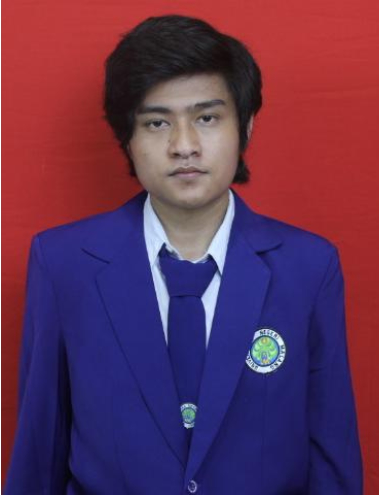

Tentang Pengembang
Rino Dharmawan Fikri
Mahasiswa Pengembang Utama
Mahasiswa Pendidikan Matematika yang mengembangkan AIGONOMETRI.
Prof. Dr. Abd Qohar, M.T.
Dosen Pembimbing Pengembangan
Dosen pembimbing yang berfokus pada pengembangan teknologi dalam pendidikan matematika dan berkontribusi besar dalam membimbing pengembangan AIGONOMETRI.